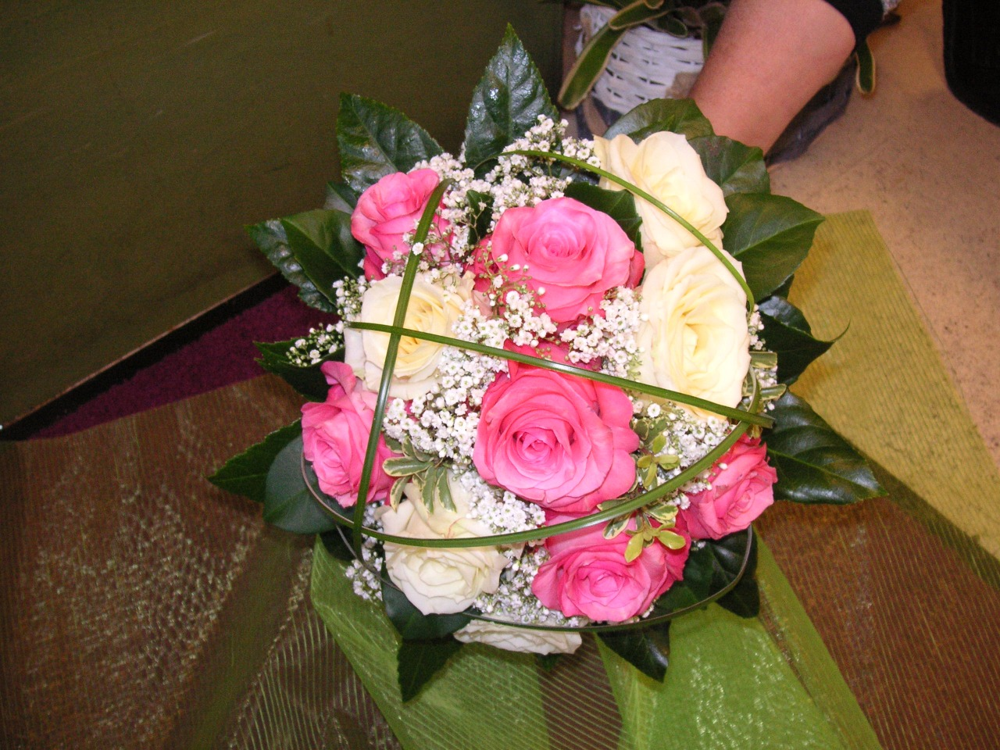
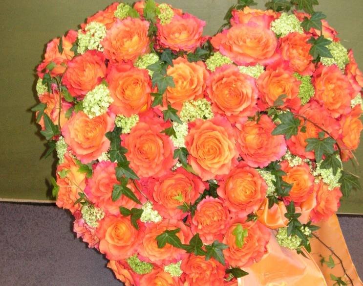

Leibstr. 26
85540 Haar
Unsere Service
Floristik

Sie suchen nach einer schönen und einfallsreichen Tischdekoration? Dann sind wir für Sie als Tischfloristik der richtigen Ansprechpartner. Wir bieten Ihnen als Experte die perfekte Unterstützung, bei der Gestaltung ihr Tischen
Bei uns ist immer was dabei
Hochzeitsfloristik
Elegant oder verträumt? Egal wie Sie Ihre Hochzeit feiern, wir bieten Ihnen den passenden Blumenschmuck. Vom Brautstrauß über die Tisch- und Raumdekorationen, vom Auto- und Kirchenschmuck bis hin zu Ansteckern und Blumen für die Kinder – unsere liebevolle und kreative Hochzeitsfloristik wird Sie und Ihre Gäste begeistern.
Tischfloristik
Um eine einfache Location oder einen normalen Raum in ein Wohlfühlambiente zu verwandeln, bedarf es nur weniger Kunstgriffe. Die aber müssen punktgenau treffen. Eine stilvoll ausgesuchte Tischdekoration zählt zu den kleinen, aber unabdingbaren Säulen geschmacklichen Könnens und vielseitiger Ausstattungsgabe.
Trauerfloristik
Abschied nehmen von einem lieben Menschen gehört zu den schwersten Dingen im Leben. Oft fehlen die Worte - wie schön ist es dann, wenn Sie bei einem Todesfall mit einem Trauerkranz Ihre Liebe und Wertschätzung ausdrücken können! Wir sind für Sie da, wenn es darum geht, den passenden Grabschmuck zu gestalten.